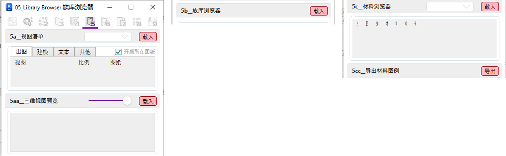

05页签目前已制作三个主要工具:
a. ViewSheetList 视图清单 / 3DViewList 三维视图预览
解决Revit自带浏览器分类不够明确和缺少预览功能的问题
生成平立剖面或三维视图清单, 并可直接点击内容打开相关视图或图纸空间
b. FamilyLibrary 族库浏览器
解决Revit自带浏览器分类不够明确和放置族选取困难的问题
依当前项目生成带预览图的族库清单
c. MaterialManager 材料浏览器 / ExportMaterialLegend 导出材料图例
解决Revit无法快速查询物件材料和导出二维图例的问题
依当前项目生成带预览图的材料清单, 并可依当前视图获取立面相关材料与填充样式